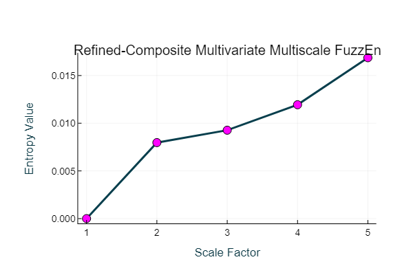

Example 12: [Generalized] Refined-composite Multivariate Multiscale Fuzzy Entropy
Import the x, y, and z components of the Lorenz system of equations.
Data = ExampleData("lorenz");
using Plots
scatter(Data[:,1], Data[:,2], Data[:,3],
markercolor = "green", markerstrokecolor = "black",
markersize = 3, background_color = "black", grid = false)
Create a multiscale entropy object with the following parameters: EnType = MvFuzzEn(), fuzzy membership function = 'constgaussian', fuzzy function parameter = 1.75, normalized data to unit variance = true.
Mobj = MSobject(MvFuzzEn, Fx = "constgaussian", r = 1.75, Norm = true)(Func = EntropyHub._MvFuzzEn.MvFuzzEn, Fx = "constgaussian", r = 1.75, Norm = true)Calculate the generalized refined-composite multivariate multiscale fuzzy entropy over 5 scales and plotting the output.
When the multivariate entropy method is multivariate fuzzy entropy ($MvFuzzEn$), cMvMSEn by default employs a generalized graining procedure with the standard deviation (not the variance like in MvMSEn). This follows the method presented in [1].
[1] Azami, Fernández and Escudero. " Refined multiscale fuzzy entropy based on standard deviation for biomedical signal analysis " Medical & biological engineering & computing 55 (2017): 2037-2052
As with conventional generalized multiscale entropy, the multiscale entropy value for the first scale will always == 0, as the variance or standard deviation of a singular value is 0!
MSx, CI = cMvMSEn(Data, Mobj, Scales = 5, Refined = true, Plotx = true)([-0.0, 0.00796833336926883, 0.009267652341151076, 0.011937308821036122, 0.016866306182710334], 0.046039600714166365)